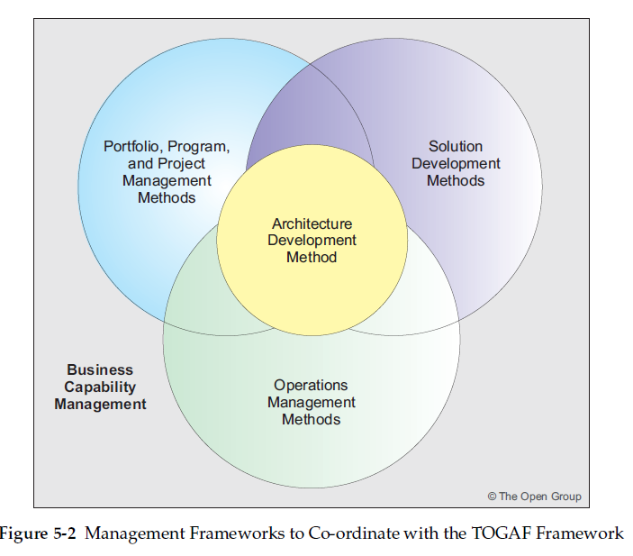
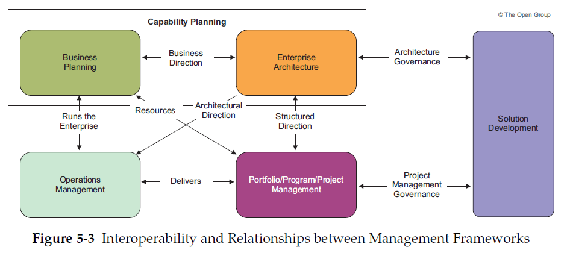

Things begin with a business directive for an enterprise architecture. That is when the preliminary phase begins. Here, we take care of preparation and initiation related activities. Unlike the rest of the ADM (that is iterative), the preliminary phase is executed only once. In essence, this phase takes care of identifying the desired Architecture Capability and the defining it in precise technical sense.
In the Preliminary Phase, we define the "where, what, why, who, and how we do architecture" in the enterprise concerned. The main aspects are as follows:
The preliminary phase takes several inputs in form of the standards along with architectural and non architectural inputs. The foremost input is the TOGAF Library - that provides detailed account of proven techniques and tools for the process. Any other framework specific to the industry or the desired enterprise is also an input to this phase.
This phase is not purely technical as it involves understanding and adopting plans, strategies, goals for the Business and the IT organization. It takes inputs from several project and portfolio management frameworks in play. It also needs inputs from the legal and contractual aspects of the business.
Having digested these inputs, it can look into the architectural inputs like the current organizational enterprise. It takes inputs from any existing evaluation of the various aspects like scope, maturity assessment, role of architecture teams, the budget requirements and any governance/support strategies defined. It also takes inputs from the architecture framework currently in place - the principles, method, content and architecture repository along with the details of tools that are configured and deployed.
The most important step in the preliminary phase is to initiate and adapt the ADM to define an organization specific framework. The level of detail for the preliminary phase depends on the scope and goals of the overall effort. Similarly, the order of the steps or the time spent on each depends upon various situational factors - within the limits defined by the architectural governance.
This involves identifying 5 distinct entities
The nature of Architecture Governance depends a lot on the architectural framework in use. The governance could be centralized or federated, light or heavy. The Architecture Governance organization and guidelines are developed in accordance with the Architecture Framework in play. This framework for Architectural Governance forms one of the important outputs of the preliminary phase.
The different types of architectural material - standards, guidelines, models, compliance reports, etc. should be brought under governance. We need to define the repository characteristics in terms of the relationships and status recording of the artifacts - the definition of governance processes (dispensation, compliance, take-on, retirement, etc.) that own a given architectural artifact.
Based on this, we evaluate if and how the existing governance and support models would change. The sponsors and stakeholders should be consulted. At the end of this step, the impacts of the new architectural framework need to be understood and agreed by the relevant stakeholders.
We start with evaluating and assessing the existing and target EA/Business capability and maturity along with the gaps between the two. This is followed by assigning roles and responsibilities for the capability management and governance.
Based on the gap analysis, define the Request for Change to the existing business programs and projects. Consult the individual Enterprise and IT Architects, to assess the impact on their plans and work. After identifying and working on the common interests and conflicts, produce requests for change to the stakeholder activities. With these inputs, identify the constraints on the EA work to review and agree with the stakeholders.
Finally, assess the budget requirements.
Architecture Principles are based on business principles and are critical in setting the foundation for Architecture Governance. Once the organizational context is understood, we must define a set of Architecture Principles that is appropriate to the enterprise.
The TOGAF and any other Framework in play should now be tailored to match each other and the enterprise needs. Tailoring the framework involves tailoring the Terminology, Process and Content of the framework.
Tailoring should produce an agreed terminology that describes the various architectural components across the organization. There may be duplication or gaps in the processes over the organization and the different frameworks put together. These need to be addressed to define a consistent set of processes followed across the organization. Similarly, the content framework needs to be consistently updated to meet an organization wide enterprise continuum of architectural content.
The tools strategy includes various aspects like management techniques, decision management, workshop techniques, business modeling, detailed infrastructure modeling, office products, languages, and repository management as well as more formal architecture tools. For example, the Balanced Scorecard technique is a best practice performance measurement tool used by business schools and many organizations that can be used successfully in architecture projects.
A tools strategy enables more effective and rapid decision-making by stakeholders and their ownership of artifacts. Architecture content will be highly dependent on the scale, sophistication, and culture of both the stakeholders and the Architecture Capability within the organization.
As we follow the above steps with the defined inputs, we should be able to generate the following outputs. The phase could have many more outputs; or lesser - as per the adaptation of the model. But this is the nominal set:
The first output of the preliminary phase is an organizational model for the enterprise architecture. It should include
Essentially, all the organizational aspects of the architecture initiation.
As we tailor the TOGAF and any additional framework in place, we generate an adapted framework that needs to be documented. This should document the tailored architecture methods, content and principles along with the configured and deployed tools.
This documents the initial or baseline enterprise architecture framework in place (framework, not the actual architecture). Along with this, we document the contents of the initial architecture repository. It also includes the framework and its content.
We evaluate the business principles, goals and drivers; and the enterprise architecture in the light of these. Now, we need to document these more formally; or reference to another formal statement of these.
The Request for Architecture Work or the statement of work is generated in the preliminary phase. This should be formally documented as one of the outputs of the Preliminary Phase.
The governance strategy is already in place (documented above). We also need to define the actual governance framework in the Preliminary Phase itself.
Depending on the scale of the enterprise and the level of budgetary commitment, we may have to sub-divide or partition architecture teams, processes, and deliverables. There are several approaches for doing this. The Preliminary Phase should be used to determine the desired approach to partitioning and to establish the groundwork for the selected approach to be put into practice.
The Preliminary Phase may be revisited, from the Architecture Vision phase, in order to ensure that the organization's Architecture Capability is suitable to address a specific architecture problem.
The approach to the Preliminary phase can be understood on the different levels:
Defining the enterprise scope is one of the main challenges of Enterprise Architecture
The scope of the enterprise, determines stakeholders who will derive most benefit from the Capability. At this point, it is necessary to ensure clear support of the business management, and appoint a sponsor, who can ensure that the resultant activity has resources to proceed.
The enterprise may span across many organizations and the sponsor has to ensure that all stakeholders are included in defining, establishing, and using the Architecture Capability.
In order to get a meaningful output of the preliminary phase, one must understand the organization as a whole.
These provide valuable inputs to defining and documenting the tailored architecture frameworks.
The requirements and performance metrics in play are defined by the business imperatives. The requirements should be clear enough so that we can appropriately scope the business outcomes and resource requirements. They should be clear enough, so that this phase can define an outline of the business information requirements for the enterprise, along with the associated strategies of the Enterprise Architecture work to be done.
The requirements of the architecture work include the Business Architecture, Cultural Aspirations, Organization Intents, Strategic Intent, Forecast Financial Requirements. These need to be clearly articulated. Based on these, the sponsor can identify the various stakeholders. These stakeholders can be involved in defining and establishing the architecture capability
The Preliminary Phase defines the Architecture Principles that will form part of the constraints on any architecture work undertaken in the enterprise. The architecture principles are strongly influenced by the business principles and both together ensure the enterprise architecture effort is on track.
The enterprise may use TOGAF with or without other Architecture frameworks. TOGAF is designed to support and enhance other architecture frameworks that may coexist in the enterprise.
Along with these, the enterprise may have other management frameworks for people/ process/ material/ technology - to deliver a business capability. These frameworks coordinate with the TOGAF framework. The important among these frameworks are :
Along with the architecture, more business capabilities are required to deliver a business value - including the definition of return on investment and the requisite control/ performance measures.
These methods define how the company manages the change initiatives that go through the enterprise.
Apart from the changes and upgrades, it is important to ensure regular operation of what we already have. Tho Operation Management Methods determine how the company manages its day-to-day operations including IT.
An architecture is incomplete until it is converted into a solution that is deployed in the live enterprise. These methods formalize the way that business systems are delivered in accordance with the structures developed in the IT architecture.
These frameworks are not discrete and there are significant overlaps between them and the Business Capability Management. The latter includes the delivery of performance measured business value. The point here is that the Enterprise Architecture should not narrow his focus to the IT aspects, but must be aware of the impact that the architecture has on the entire enterprise.
The Enterprise Architecture provides a structure for all of the corporate initiatives. Portfolio Management Framework delivers the components of the architecture. The Operations Management Framework supports incorporation of these new components within the corporate infrastructure. The solution development methodology is used within the Portfolio Management Framework to plan, create, and deliver the architectural components specified in the project and portfolio charters.
Thus, the management frameworks complement each other.
Maturity Models are useful in evaluating the ability of an enterprise. Organizations can develop their own maturity models or use one of the industry standards. But it is highly recommended to use an existing model and tailor it if required. Several good models exist, including NASCIO, and the US Department of Commerce Architecture Capability Maturity Model.